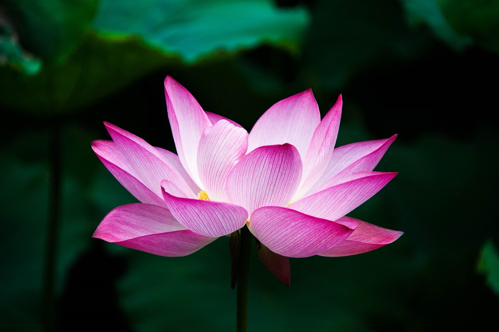

Практика в пути
Дорога как
Дорога как
внутренняя работа
Кундалини-йога, медитации и семинарская работа — каждый день путешествия, рядом с морем и древними городами.
Кундалини-йога, медитации и семинарская работа — каждый день путешествия, рядом с морем и древними городами.
Это путешествие — не только про места. Это про состояние, в котором мы их проживаем.
Каждое утро начинается с практики, день наполнен дорогой и красотой, а вечер — тишиной, разговором и совместной работой. Так путешествие, отдых и внутренняя работа складываются в одно целое.

Лотос — символ раскрытияКундалини-йога — одно из самых живых и динамичных направлений йоги. Она соединяет физические упражнения и крийи (последовательности движений), дыхательные практики, мантры и медитацию. Цель — пробудить внутреннюю энергию и привести ум в состояние ясности и покоя.
На Запад эту традицию принёс Йоги Бхаджан в конце 1960-х, а её корни уходят в древние практики. Заниматься принято рано утром, в тихие предрассветные часы, когда тело ещё спокойно, а ум особенно восприимчив.
Каждое занятие — маленький путь: настройка с мантрой, разминка, крийя, глубокое расслабление и медитация. Многие отмечают, что регулярная практика помогает снять напряжение, восстановить силы и почувствовать внутреннее равновесие.
Мягкая структура, в которой есть место и практике, и дороге, и отдыху.
Практика на рассвете — сильное и мягкое начало дня.
Время восстановиться и сосредоточиться внутри.
Базилики, смотровые, старые улицы — без спешки.
Вечерние встречи, разговоры и совместная работа.
Тёплые вечера среди единомышленников.
Пространство, чтобы замедлиться и наполниться.
Галина — автор и проводник этого путешествия. Она ведёт утренние практики Кундалини-йоги и медитации, а по вечерам — семинарскую работу, создавая пространство, где дорога, тишина и внутренняя работа соединяются в одно целое.
Её путешествия — это не туристический маршрут, а время для отдыха, вдохновения и общения в кругу единомышленников. Здесь можно одновременно увидеть настоящую Южную Италию, побыть с собой и набраться сил.
Вопросы и запись на поездку — напишите Галине Гапон.
С любовью, Галина Гапон